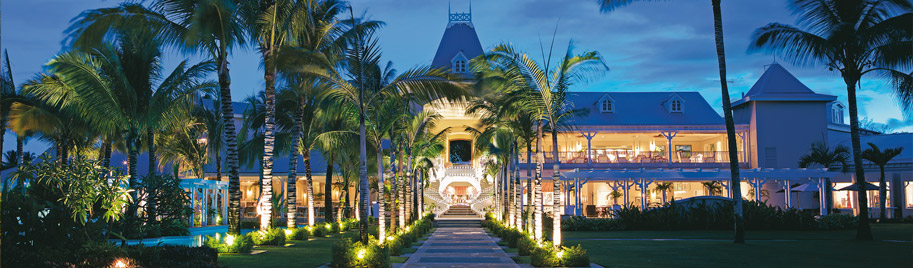

Sugar Beach - Mauritius
Situato sulla costa ovest di Mauritius, lungo la famosa spiaggia di Flic en Flac, Sugar Beach è caratterizzato da uno décor coloniale che si armonizza
con la sensualità tropicale e lo stile di vita moderno.
Il resort offre 258 camere, di cui 164 Standard, 92 Superior e 2 Suite, tutte con patio privato o balcone.
Tre i ristoranti tematici: Mon Plaisir Restaurant con buffet a tema e live show cooking, Tides Restaurant, che propone raffinata cucina di pesce,
e Citronella's Café che offre pizze cotte nel forno a legna, insalate e piatti leggeri per pranzo, mentre a cena propone le ricette della tradizione regionale italiana.
Grande spazio dedicato anche al benessere e al fitness grazie alla Spa con Hammam. Un tempio dedicato al benessere e alla rigenerazione del corpo e della mente
in cui un team di professionisti specializzati è sempre a disposizione per offrire trattamenti mirati al raggiungimento del totale relax.
Qui gli ospiti potranno sperimentare le ultime tendenze del wellness, tra cui l'esotico massaggio al sapone nero.
L'area è completata da centro fitness da 300 mq attrezzato con macchine cardiofitness, body building e centro estetico.
Anche i ragazzi trovano servizi dedicati al loro intrattenimento, quali il Sun Kids Club, che accoglie i bambini dai 2 agli 11 anni,
e il programma di attività sportive e serali targato @Sungeneration, dedicato ai ragazzi dai 12 ai 17 anni.
Per gruppi e viaggi incentive, Sugar Beach dispone di una conference room che può ospitare sino a 350 persone e offre attrezzature audio/video all'avanguardia.